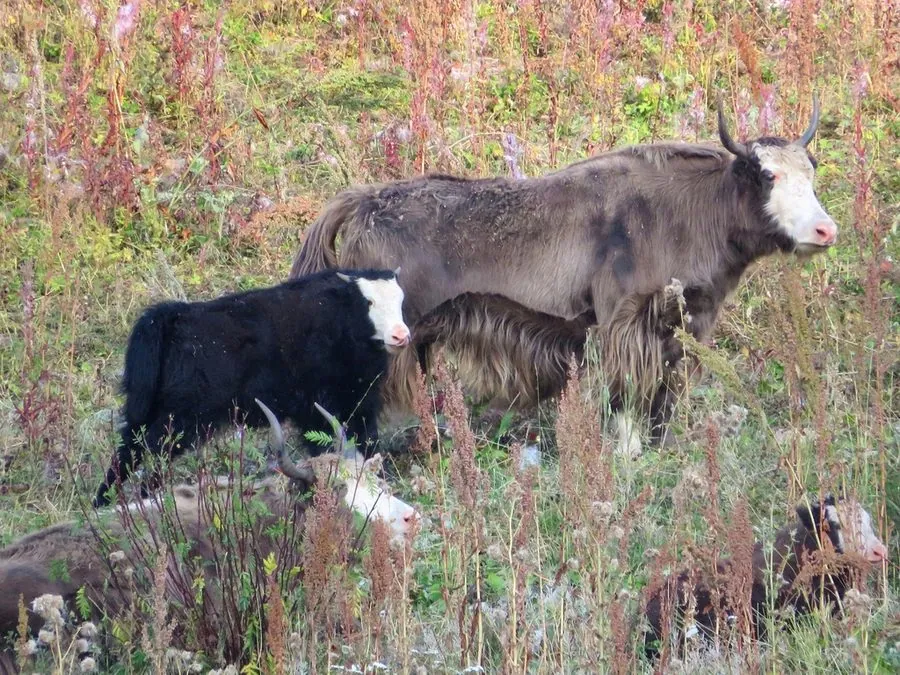

哺乳动物 · 动物界
牦牛 Bos grunniens

青藏高原的大型牛科动物，长毛垂地、肩部隆起，耐寒耐缺氧，家养牦牛是高原牧民最重要的家畜之一。
- 分类
- 门脊索动物门纲哺乳纲目偶蹄目科牛科属牛属
- 栖息环境
- 青藏高原海拔 3000–5500 米的高寒草原、草甸与灌丛
- 地理分布
- 青藏高原及周边高山，中国西部和西南部高原地区
- 保护级别
- 野生牦牛 IUCN 易危（VU）、中国国家一级保护动物；家养牦牛暂无评估
物种志
牦牛体长 2.0–2.6 米，肩高 1.1–1.7 米，体重 200–600 kg 以上，雄性明显大于雌性。它的体形粗壮，肩部隆起，全身覆深褐至黑色的长毛，体侧和腹部的毛可垂到地面，尾巴蓬松如帚；雌雄都长角，角向上弯曲，雄牛角更粗大。
牦牛分布于青藏高原及其周边的高山，从中国西藏、青海、四川、甘肃、云南到不丹、尼泊尔、印度北部，栖息于海拔 3000–5500 米的高寒草原、草甸和灌丛。野生牦牛结成雌牛群和雄牛群，以禾草、苔草为食，耐寒、耐缺氧，能在积雪中刨食枯草。家养牦牛是高原牧民重要的交通工具和肉、奶、毛来源，被称为“高原之舟”。雌兽妊娠期约 8–9 个月，每胎 1 仔。野生牦牛被列为易危、中国国家一级保护动物；家养牦牛无 IUCN 评估。
形态与习性
- 食性禾草、苔草，冬季刨雪取食枯草
- 体长2.0–2.6 m，肩高 1.1–1.7 m
- 体重200–600 kg 以上，雄性明显大于雌性
- 寿命野外约 20–25 年
- 繁殖妊娠期约 8–9 个月，每胎 1 仔
- 毛发体侧长毛可垂到地面，尾巴蓬松如帚
- 生态型家养牦牛是高原重要家畜，被称为“高原之舟”
趣味知识
- 牦牛体侧的长毛可垂到地面，帮助它抵御高原严寒。
- 家养牦牛被称为“高原之舟”，是牧民重要的交通工具。
- 野生牦牛耐寒耐缺氧，能在积雪中刨食枯草。
- 家养牦牛与野生牦牛的 IUCN 评估状态不同，需注意区分。